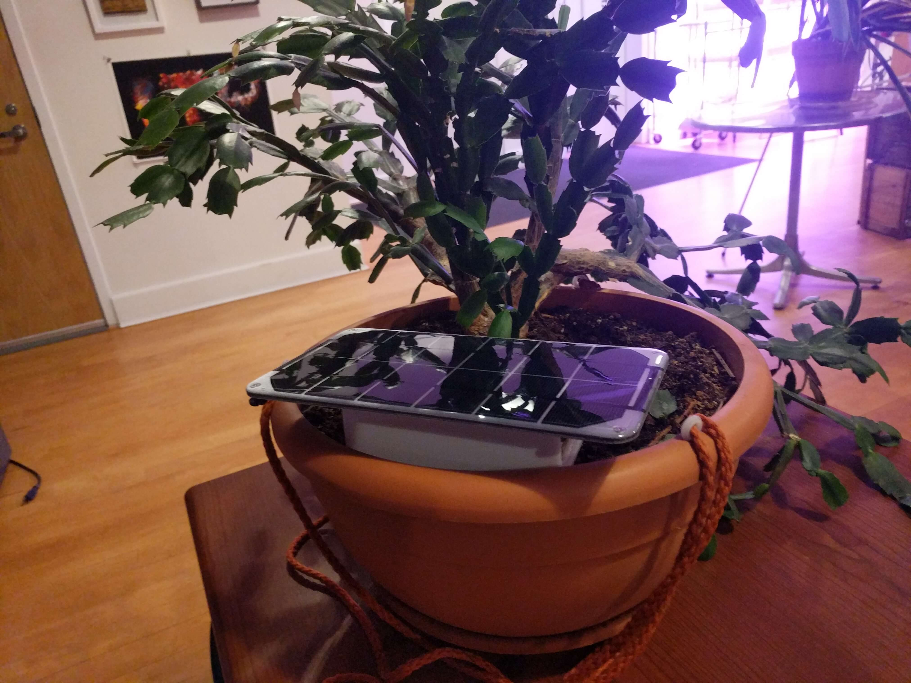
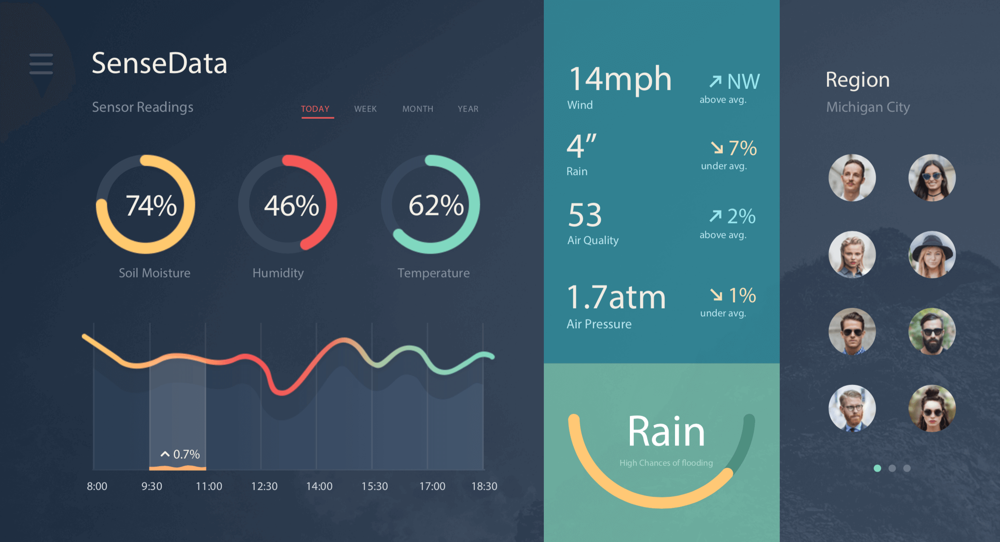
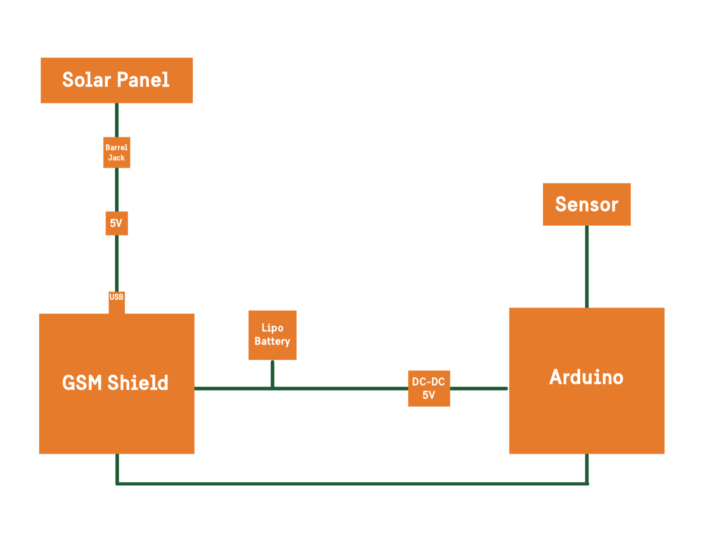

Connected agriculture prototype
SenseData
Exploring accessible farm data through solar-powered sensors, GSM connectivity, and actionable feedback.
The opportunity
Rural farming communities needed useful local information about soil, weather, and water. The concept explored how existing mobile infrastructure could make that information more accessible.
Research & prototyping
Interviewed farmers and agricultural consultants across the US, Nicaragua, and India. The team designed sensor and dashboard concepts and worked toward a hardware prototype. Proposed sensing covered soil moisture, temperature, humidity, wind, rain, and air conditions.
The system concept
The proposed device used solar power and GSM/SMS transmission. A central system would interpret readings and provide feedback to farmers, while aggregated data could support researchers and planning organizations. The original proposal described prospective pilots; it did not document a completed commercial rollout.
Focus areas
Project collaborators
Sharif Hadidi, Mithru Vigneshwara, and Nouf Aljowaysir
Explore the original research & project material
Historical material from the original 2017 project. Market comparisons, pricing, assumptions, and planned features reflect that period, rather than current product claims.
Problem Statement
For the 70% of the world’s poor who live in rural areas, agriculture is the main source of income and employment. But depletion and degradation of land and water pose serious challenges to producing enough food and other agricultural products to sustain livelihoods and meet the needs of urban populations.
Due to the shortage of relevant data, rural communities lack the necessary information to sustain growth and production. That information can be critical to protecting crops from pests and extreme weather, increasing yields, monitoring water supplies, and anticipating changes brought on by climate change.
Inspiration
The idea initially came from a class project, which required the use of GSM technology as it is growing in accessibility for developing nations. After brainstorming and continued research we came upon the idea of smart sensors for farmers in rural communities that would transmit the data via SMS to a system that could analyze and interpret the information.
We began to interview some potential customers from around the world with varying economic and financial backgrounds in order to gain a better understanding of the market. After the user interviews we found that there was a large interest in the product, it assisted us in finding out what was really important to the users and allowed us to focus on the real issues they deal with.
While we don’t have domain expertise, we are all from diverse backgrounds and have a keen interest in assisting rural communities. We believe that our product will assist with the mitigation of loss of crops.
Motivation
In the modern world there has been a large disconnect from farming communities around the world
Many farmers have moved to remote farming in order to provide their families with enough income in order to survive
Around the world farmer suicide rates have been rising
The motivations behind farmer suicides are attributed to multiple reasons including droughts, floods, debts, and use of lower quantity pesticides due to less investments producing a decreased yield
1. Guiding Principal
We are committed to providing data-driven information to agricultural neighborhoods in a fast, simple and cost-effective method, which can be critical to protecting crops, increasing yields and ensuring food security.
2. Mission Statement
We are committed to providing data-driven information to agricultural neighborhoods in a fast simple cost effective method, which can be critical to protecting crops, increasing yields and ensuring food security.
Team Values
#Accessibility #Communication #Convenience/utility #Performance #Price
3. Market
There are 570 million small farms around the world, most are family run. They operate on 75% of the worlds agricultural land which gives us a unique ability to gather information about much of the worlds farms.
Agriculture employs between 70-90% of the population for farming in developing countries. Agriculture contributes 52% to poverty reduction.
Revenue Stream
Our Marketing Channels
- Radio ads
- Public Service Announcement in targeted communities
- Word-of-mouth
- Emails/SMS sign-up
- Flyers/Posters
- Facebook advertisements
Our Cost Structure
- Software development
- Hardware
- Servers
- Deployment Costs
Our Revenue Streams
- Sell data to universities
- Subscription to get info
- Sell DIY urban gardens
We were hunter-gatherers of information, and we moved from that to becoming farmers and cultivators of information.
–J.P. Rangaswami
4. What We Offer
- Offer timely information on farm health
- Minimize losses
- Set & forget unit (simple)
- Provide data dashboard to planning bodies/ govt./ univ
- Off-the power grid
- PSA for rural farming
- Low initial cost overall cost
- Builds on existing infrastructure

Technology
We are using smart sensors that we have built to gather a variety of information:
- Soil Moisture
- Air Temperature/Humidity
- Wind Direction
- Rain
- Air Quality
- Air Pressure
- Powered through Solar Panels
5. Competitive Advantage
We understand the needs of smaller farmers compared to our competitors. Our focus has been to provide easily understandable metrics to these farmers. The primary goal is to provide robust farm data to researchers. The secondary goal is to simplify the data and translate the data in order to reach a larger market.
As opposed to our competitors, we provide aggregated data to research groups and governments. The incentive for farmers is that we provide information with actionable feedback at low cost to them.
We identity FarmX, CropX, Farmlogs, Farmobile, OnFarmSystems and others as competitors.
6. Progress
We have conducted research and user interviews with a couple of farmers and agricultural consultants from different parts of the world (US, Nicaragua, and India). The agricultural consultant we spoke with expressed interest in partnering with us and running a beta of our product into the farms in his community in India. Currently, we are in the stage of mocking up/rendering our product. On the technology-side, we’re building a working prototype to test out the hardware. Our plan is to first launch our pilot with local farmers in upstate New York in order to find out what data is most relevant, while also mitigating the possible risks for the farmers by polishing the product.

Admin Dashboard Mockup Prototype
Spec MakeupProduct Market Fit
We began to interview some potential customers from around the world with varying economic and financial backgrounds in order to gain a better understanding of the market. After the user interviews we found that there was a large interest in the product, it assisted us in finding out what was really important to the users and allowed us to focus on the real issues they deal with.